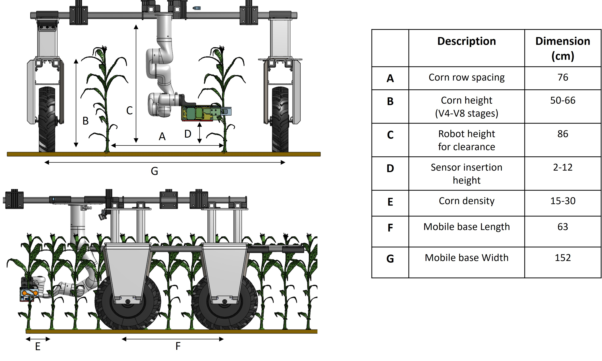
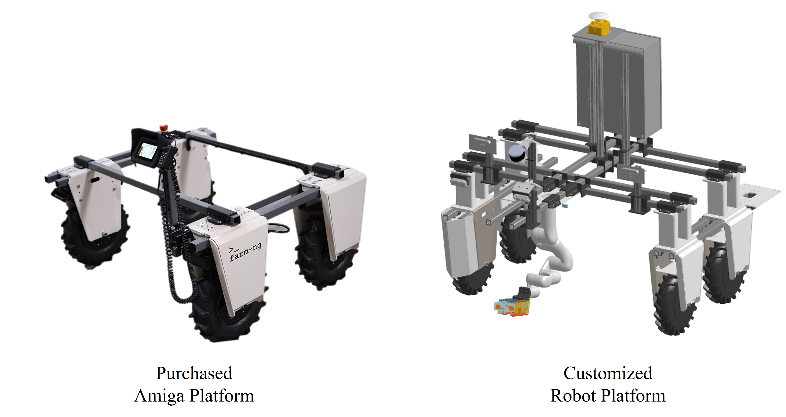
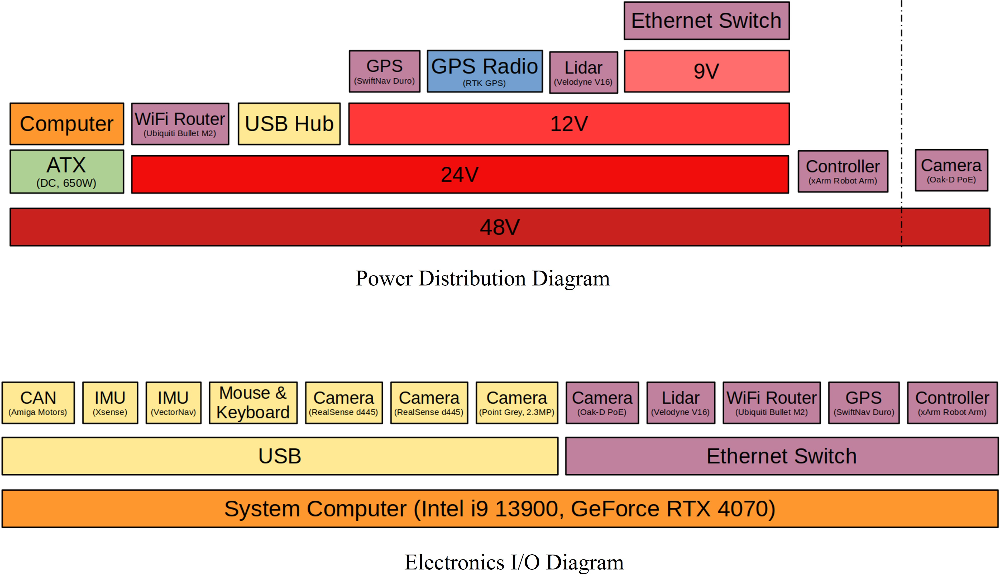

Design Specification
The robot platform dimension and configuration was heavily guided through the field specification of the corn farm.
Given the typical row spacing between planted corns, we could determine the mobile base width to straddle two rows of corn.
In addition, since inserting sensors in earlier stages of the plant cycle yield more valuable information to monitor, we could determine the height of the mobile platform to hover above the plants.
For the arm position, being able to insert into both sides of the straddle plants is more efficient per single passing of the corn rows,
so we could determine the arm to be in the center although that would eliminate some plants that are too close for the long gripper to be able to kinematically reach.
Lastly, the arm mounting height was determined by the sensor insertion height, or the stalk region where sensors would provide most nitrate-rich information.

Hardware for the Mobile Base
The AmigaRobot is a 4 wheel drive mobile platform with suite of sensors for navigation tasks that has been
added from the commerical Amiga product. Attached is a 6 DOF robot
arm with a custom gripper for sensor insertion tasks. In this section, we describe the hardware and software
diagram of our platform.

The modular hardware of the Amiga platform greatly accelerated the development of the custom Hefty platform. Much of the dimension modification could be done with modifying the bar extrusion for width and height.
This modular structure also provided ample mounting locations for various perception sensors that could be used for future navigation work.
Bill of Materials can be found here:

CAD file for the robot can be found here.
Electrical Diagram
We also added the custom electronics box that contains the power regulators and processing unit for the robot in a weather-resistant enclosing.
The power regulator is for the xArm DC power supply and power management system that monitors current draw and regulates various voltage levels. The PC used is a ITX motherboard with RTX 4070 GPU with a cooling unit.

The signal I/O connections to various electronics are outlined below.
